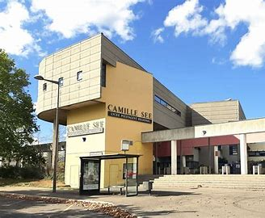

My high school years
My establishment:
Lycée polyvalent Camille See in Colmar
Address: 42 avenue de l'Europe - 68025 Colmar
My second:
The common core:
In seconde générale, apart from maximum of options, the entire program is a core curriculum. This makes it easier for us to broaden our field of knowledge and find out which specializations are best suited to our future studies.
So I was able to study a lot of subjects like:
- Mathematics
- Physics/chemistry
- Life and Earth Sciences (SVT)
- SNT (Digital and Technological Science)
- History/Geography and EMC (moral and civic education)
- French (seconde and première)
- EPS (Physical Education and Sports)
- English
- German
- Science teaching (reminder of the fundamentals covered in middle school science, in the first and last years of high school)
- Philosophy (final year only)
Choice of specialties:
The aim of the seconde générale is to give students a broad enough core curriculum to help them choose their specialties. You have to choose three specialties for the première, two of which you will keep for the terminale. For example, Camille See is a very artistic school, offering theater and fine arts, which are quite rare. Unfortunately, Camille See doesn't offer the NSI (Science Numérique et Informatique) specialization, which I'm sure would have interested me.
My school's speciality is:
- Mathematics
- Physics/Chemistry
- SVT
- SES(Economic and Social Science)
- HGGSP(History/Geography/Geoscience/Politics)
- HLP(Humanity Literature Philosophy)
- Theater
- Plastic Art
- English
- German
Speciality n°1: Mathematics
I've always found math easy to understand, and it's a subject I find amusing (you spend an hour thinking about exercises, whereas in other subjects you just have to listen to the teacher lecture and take notes), so it seemed obvious to me to choose this speciality.
This specialization taught me a lot about geometry (both in the plane and in space), sequences and the study of functions. I also learned a lot of new concepts such as reasoning by recurrence, integrals, convexity of functions etc...
But above all, this specialization enabled me to enroll in the expert maths option, where I learned even more. I was able to discover complex numbers (which enormously improved my level of trigonometry), congruences (I even did a presentation on their use in computing with a python encryption program) and matrices (which we covered very quickly at the end of the year).
Speciality n°2: Physics/Chemistry
What led me to choose this specialization was physics. I've always been interested in physics because I've always been able to give it a useful purpose. All the technological objects we have at our fingertips today were created thanks to discoveries in physics.
However, I was never attracted by chemistry, which seemed simpler at first glance. In chemistry, I had difficulty with the manipulations, often forgetting a small detail or making a clumsy gesture that could ruin my whole TP.
The advantage of this specialization is that it explores a very broad field. In two years I've learned an enormous amount in mechanics (study of motion in relation to several reference frames), optics (study of converging and diverging lenses), electricity (charging and discharging a capacitor), thermodynamics, chemistry (dilution, dissolution, distillation, etc.), the operation of an electrochemical cell, kinetic chemistry (speed of appearance or disappearance), etc...
Speciality n°3: SVT
When I chose the SVT specialization, I was still hesitating between two fields in my orientation (computer science and kinesitherapy). However, the idea of becoming a kinesitherapist quickly passed me by, and this year of SVT didn't go as well as I'd imagined. I had a teacher who was perhaps the worst in my school career and who spent her time putting us down. From the very first lesson I knew that the year was going to be complicated, but fortunately for us this teacher left overnight on maternity leave. She was absent for 3-4 months of the year, two of which the school was unable to find a replacement.
As a result, we missed a large part of the curriculum in Première, which is why I had to stop taking this speciality in Terminale.
In the few classes we had, we covered three topics: genetics, inflammatory reaction and geology (which I didn't like).